How can the tangram pieces be rearranged to form each of the following figures?
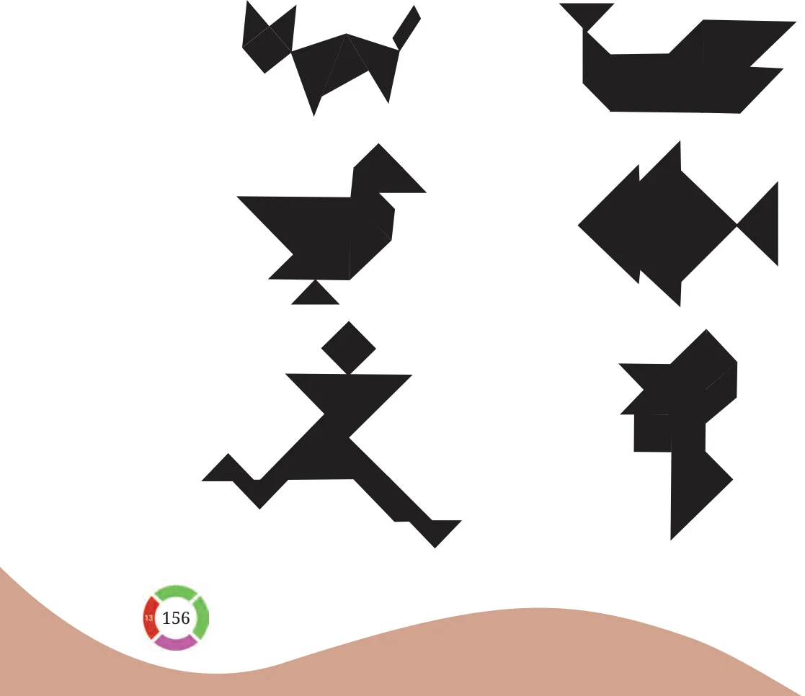
Covering a region using a set of shapes, without gaps or overlaps, is called tiling. Consider a rectangular grid made of unit squares -
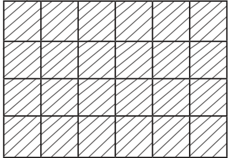
We call this \(a 4 \times 6\) grid, since it has 4 rows and 6 columns. Can \(a 4 \times 6\) grid be tiled using multiple copies of \(2 \times 1\) tiles? We are allowed to rotate \(a 2 \times 1\) tile and use it.
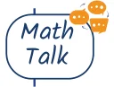
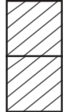
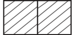
Vertical tile Horizontal tile
Here is one way.
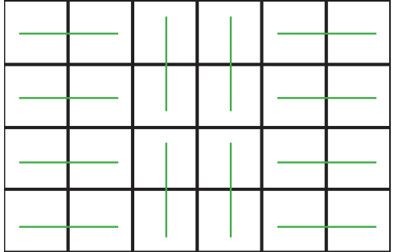
Obviously, this is not the only tiling possible.
Can \(a 4 \times 7\) grid be tiled using \(2 \times 1\) tiles?
What about \(a 5 \times 7\) grid? To see that there is no way to tile \(a 5 \times 7\) grid using \(2 \times 1\) tiles, observe that this grid has 35 unit squares. Each tile covers exactly 2 unit squares.
Complete the justification.
Is an \(m \times n\) grid tileable with \(2 \times 1\) tiles, if both m and n are even? If yes, come up with a general strategy to tile it. One general strategy for this case is to cover each column with vertical tiles. This is possible because the number of rows is even.
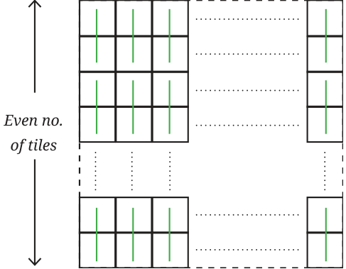
Is an \(m \times n\) grid tileable with \(2 \times 1\) tiles, if one of m and n is even and the other is odd? If yes, come up with a general strategy to tile it.
Is an \(m \times n\) grid tileable with \(2 \times 1\) tiles, if both m and n are odd? Give reasons.
Here is \(a 5 \times 3\) grid, with a unit square removed. Now, it has an even number of unit squares. Is it tileable with \(2 \times 1\) tiles?
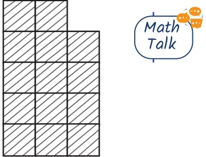
Is the following region tileable with \(2 \times 1\) tiles?
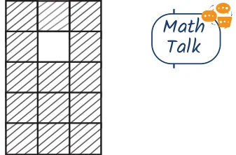
What about this one?
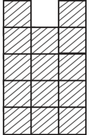
Were you able to tile this? How can we be sure that this is not tileable? Can you find another unit square that, when removed from \(a 5 \times 3\) grid, makes it non-tileable? There is an interesting way to look at these questions. For any tiling problem of this kind, we can create a similar problem with the unit squares coloured black and white so that black squares have only white neighbours and white squares have only black neighbours. For the tiling problem in Fig. 6.13, we get the following.
Plain grid Black and white grid
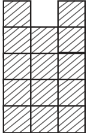
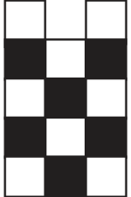
Region to be tiled
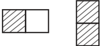
Tiles
In the black-and-white region, the problem is to tile the region with the \(2 \times 1\) black-and-white tiles so that each black square of a tile sits on a black square of the grid, and each white square sits on a white square. If the plain grid is tileable, is the black-and-white-grid tileable? If the black-and-white grid is tileable, is the plain grid tileable? Math Talk It can be seen that the answer to both the questions is yes.
Is the black-and-white region in Fig. 6.14 tileable? Any region tiled with black-and-white-tiles must have an equal number of black tiles and white tiles. Since the black-and-white region in Fig. 6.14 has 8 white squares and 6 black squares, it can never be tiled with these tiles!
Use this idea to find another unit square that, when removed from \(a 5 \times 3\) grid, makes it non-tileable? Isn’t it surprising how, by introducing colours and making the problem more complicated, it becomes easier to tackle? What a creative way of looking at the problem!